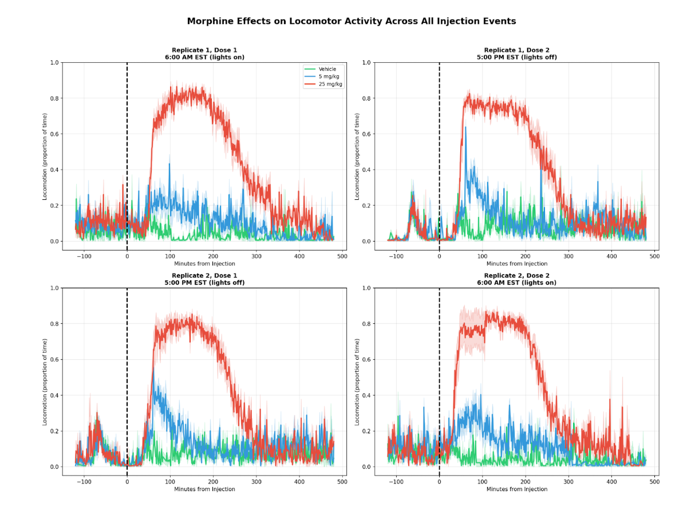
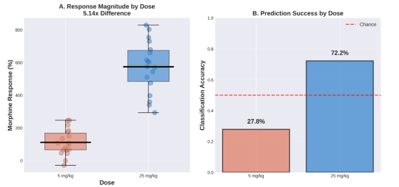
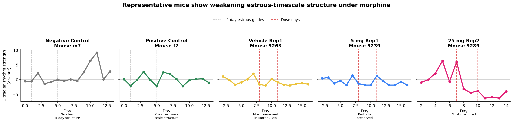
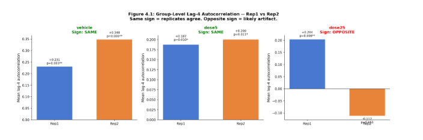
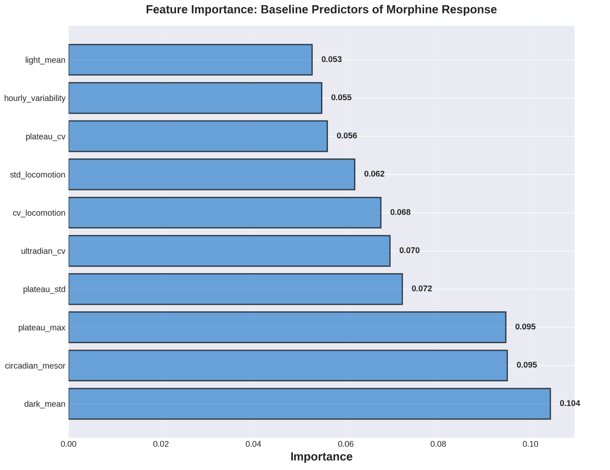

Using high-resolution behavioral monitoring to track acute and long-term drug effects, and to reveal estrous-linked physiological rhythms directly from movement patterns.
Mentors: Benjamin Smarr, Manny Ruidiaz · UC San Diego, Halicioglu Data Science Institute
Drug testing in animals is central to determining pharmaceutical safety and effectiveness, yet female mice have historically been underrepresented in these studies. Hormonal variability is often treated as experimental "noise," leading many pipelines to avoid females altogether and leaving drug effects in female biology less systematically measured beyond the immediate dosing window.
As a result, potential long-term or subtle disruptions in physiology and behavior may remain hidden even when the underlying data exist. The estrous cycle — a roughly four-to-five-day reproductive rhythm in female mice — introduces variability that researchers have found difficult to account for without invasive measurements.
Continuous, high-resolution behavioral monitoring allows us to observe mice across multiple days rather than relying on short experimental snapshots. Using locomotor data from the Morph2REP dataset, we apply a label-free analysis pipeline that treats movement patterns as time-series signals of underlying physiology, analyzing dose-dependent behavioral changes and multi-day rhythmic patterns to better understand how drugs influence female physiology over time.
Can estrus-linked behavioral rhythms be detected directly from locomotion without invasive labels, and are these rhythms altered or disrupted following morphine exposure?
Can locomotor dynamics identify dose-dependent responses to morphine, distinguish high vs. low responders, and determine whether behavioral effects persist after dosing?
Animals were housed in automated Envision cages equipped with high-resolution behavioral tracking systems. These systems continuously recorded locomotor activity at minute-level resolution, generating rich time series representing movement within the cage across 13–15+ days of observation.
On non-dosing days, all treatment groups showed similar, typical low-level activity fluctuations. Following morphine injection, locomotion increased dramatically in a dose-dependent manner, with the strongest response at 25 mg/kg.


Beyond the acute spike in activity, ultradian locomotor signals (1–3 hour rhythms) were extracted from minute-resolution activity using wavelet analysis and normalized to baseline. In positive control mice, the signal shows a clear repeating ~4-day pattern consistent with the estrous cycle. In Morph2REP mice, rhythmic structure is weaker under vehicle and appears disrupted following high-dose morphine, suggesting attenuation of estrous-timescale behavioral organization.

High-dose morphine (25 mg/kg) does not just cause acute locomotor activation — it disrupts the underlying behavioral rhythmic structure that persists across days, potentially masking or interfering with endogenous physiological cycles like the estrous cycle.
To extract physiological rhythms from behavioral data, we applied a multi-stage computational pipeline combining signal processing, probabilistic modeling, and cyclicity testing — all without requiring invasive estrous labels.
Locomotor time series were transformed using a continuous wavelet transform with a Morlet wavelet. We focused on the ultradian frequency band (1–3 hour cycles), which captures short-timescale behavioral fluctuations associated with structured activity states. Daily power values were normalized relative to baseline using the median and median absolute deviation (MAD), producing a z-scored ultradian signal for each mouse-day.
A two-component Gaussian Mixture Model partitions each day into a high or low ultradian power state, producing a daily probability signal (plowU). This probabilistic representation translates raw locomotion into a compact signal suitable for detecting repeating physiological patterns across days.
Lag-4 autocorrelation of the state probability signal tests for estrous-consistent periodicity. A lag of four days was selected because the estrous cycle in mice typically occurs on a four-day timescale. Both individual-level and population-level analyses were performed, with permutation-based null distributions used for significance testing.
While several mice exhibit positive autocorrelation consistent with repeating behavioral structure, most animals do not reach statistical significance individually — only about 5 of 54 mice showed significant cyclicity. This limited detection is expected given the short observation window (~13–15 days), which captures only a few potential estrous cycles and includes behavioral perturbations from experimental events such as dosing and cage changes.
Despite weak individual signals, the presence of significant mice above the expected false-positive rate suggests underlying rhythmic structure exists within the behavioral data, motivating group-level analysis.
Before interpreting population-level results, we validated that the analysis pipeline reliably distinguishes genuine estrous-linked signals from noise using three control conditions.
When estrus timing was artificially disrupted by de-aligning female cycles, the expected suppression of ultradian power on estrus-labeled days disappeared. Ultradian activity fluctuated without a consistent relationship to the assigned estrus labels, confirming the signal depends on correct temporal alignment rather than random locomotor variation.
Male mice, which do not experience estrous cycles, showed no evidence of periodic ultradian suppression or consistent rhythmic structure corresponding to estrus. Autocorrelation and rhythmicity analyses did not reveal a significant ~4-day cyclic pattern, ruling out non-biological artifacts in the pipeline.
Using the established approach from Smarr et al., aligned female datasets showed ultradian locomotor power consistently decreasing on estrus days with a recurring ~4-day pattern. This periodic structure was detectable through rhythmicity analyses and aligned with known reproductive timing.
Together, the positive and negative control results demonstrate that the analysis pipeline reliably detects genuine estrus-associated behavioral rhythms while avoiding false cyclic signals when estrus timing is absent or disrupted. This gives us confidence that cyclicity detected in the Morph2REP data reflects real physiological structure.
When analyzed collectively, mice exhibited consistent lag-4 autocorrelation patterns at the population level. The vehicle group serves as a critical negative control for rhythm disruption: these animals received saline injections on the same schedule as morphine-treated mice, experiencing the same handling, injection stress, and cage disturbances — but no pharmacological agent. Both vehicle replicates showed significant positive lag-4 autocorrelation (r = 0.22 and r = 0.33, both p < 0.05), confirming that the injection procedure and experimental perturbations alone do not disrupt estrous-timescale behavioral rhythms.
The 5 mg/kg group showed weakly positive cyclicity: Rep1 was significant (r = 0.18, p < 0.05) while Rep2 was not (r = 0.04, n.s.), suggesting low-dose morphine partially attenuates but does not eliminate rhythmic structure. The 25 mg/kg condition showed a direction flip between replicates (r = 0.20 vs. r = −0.13), indicating that high-dose morphine disrupts behavioral rhythmic structure. This dose-dependent gradient — from preserved rhythms in vehicle controls, to attenuated rhythms at low dose, to disrupted rhythms at high dose — provides evidence that morphine itself interferes with endogenous estrous-timescale behavioral organization.
| Dose | Rep1 r | Rep2 r | Pattern |
|---|---|---|---|
| Vehicle | 0.22* | 0.33* | consistent positive |
| 5 mg/kg | 0.18* | 0.04 (ns) | weak positive |
| 25 mg/kg | 0.20* | −0.13 (ns) | direction flip |

The dose-dependent gradient — from preserved rhythms in vehicle controls, to attenuated rhythms at 5 mg/kg, to disrupted rhythms with a direction flip at 25 mg/kg — supports the interpretation that morphine itself interferes with endogenous behavioral rhythms, rather than experimental procedures confounding the signal.
To test whether these detectable rhythms actually influence how an animal responds to morphine, estrous-derived features were incorporated into predictive models and statistical tests. Across six machine learning models and four independent statistical tests (all p > 0.3), estrous features did not improve prediction of morphine response.
Adding seven estrous features to the 24 baseline behavioral features slightly decreased average prediction accuracy (62.0% to 60.2%). The best model achieved 72.2% accuracy using baseline features alone, with no improvement from estrous metrics.

Ultradian locomotor dynamics vary systematically across days, indicating structured behavioral state changes detectable through wavelet analysis.
Vehicle controls (negative control) show consistent positive lag-4 autocorrelation across both replicates, confirming estrous-timescale rhythms survive experimental procedures.
Morphine disrupts rhythms in a dose-dependent manner: attenuated at 5 mg/kg, direction flip at 25 mg/kg — anchored by the preserved vehicle control baseline.
Estrous-consistent rhythms can be detected computationally from locomotion alone, without invasive vaginal cytology, opening the door to noninvasive physiological monitoring.
Behavioral monitoring pipelines can reveal physiological rhythms without invasive measurements. While estrous-consistent rhythms are detectable in locomotor behavior, baseline behavioral phenotypes — not hormonal cycle phase — are what predict individual drug response.